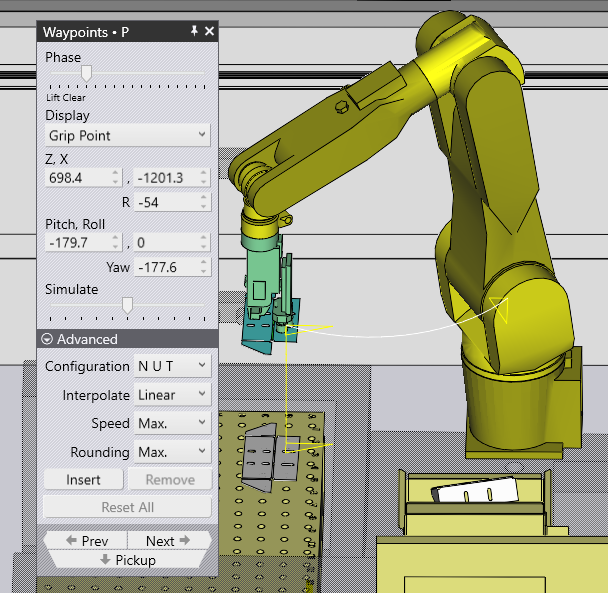
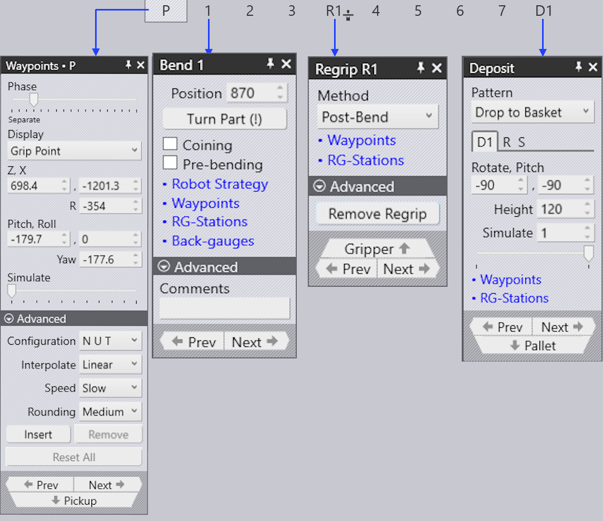
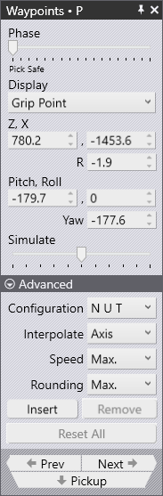
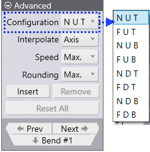
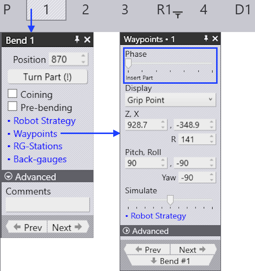
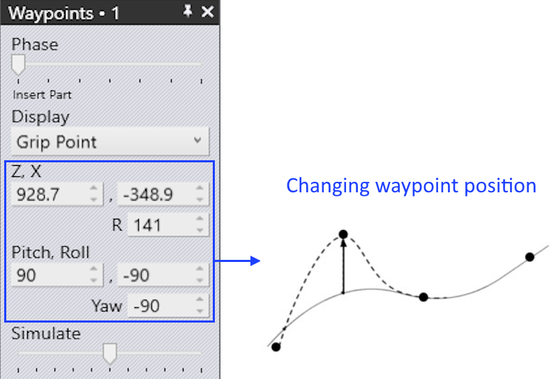
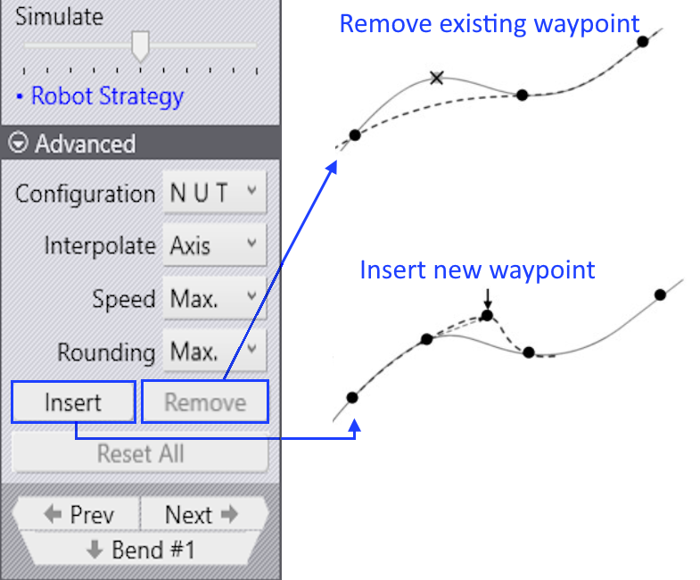

Waypoints
Overview
Each movement of the robot consists of waypoints which are passed one after the other. All waypoints of a movement are determined by FlexCell CAM, but most of them can be adjusted. Points that are directly related to the tracking during the bending process cannot be changed. Various settings used to control the waypoints are listed below:
-
Change the position of a waypoint
-
Insert a new waypoint or remove an existing waypoint
-
Adjust the motion properties such as speed and interpolation
-
Add a new waypoint at desired position
To access the Waypoints panel:
-
Press E W to open the Waypoints panel for the current stage.

-
Click the Waypoints link from Pickup panel, Bend panel, Regrip panel or Deposit panel.

Waypoints panel

A typical waypoints panel is shown alongside:
-
The Phase slider shows the step by step movement of a waypoint. Each phase reflects a particular robot operation like pickup, bend, regrip and deposit.
-
Use the Display option to view the:
-
Grip Point - The X, Y, Z, W, P, R of Tool Center Point (TCP) are displayed and can be edited
-
Wrist Point - The X, Y, Z, W, P, R of End of Arm Tool (EOAT) are displayed and can be edited
-
Robot Axes - The robot joint axes values are displayed and can be edited.
-
-
The yellow trace shows the path from the previous step to this one, and from this step to the next one (see image below). The 3 small triangles indicate the local X and Y coordinates of the robot (wrist or gripper).
-
The Simulate slider is used to move the simulation from the previous phase to the next phase. If this is in the middle, that is the actual phase we are editing.
-
The Configuration section shows the current configuration of the robot. It represents the robot’s attitude.
-
The Interpolate setting is used to switch between linear and axis-oriented interpolations.
-
The Speed and Rounding settings are used to edit the speed and accuracy setting for this step.
-
Insert option is used to create new waypoint by entering new values. Newly added waypoints can be removed by Remove option.
-
Use the Prev and Next buttons to go to the next or previous steps (or you can also use the Left and Right arrow keys). Clicking on Next button will show each step in a phase. At the end of the phase, next corresponding waypoint panel is displayed.
Properties of waypoints
Depending on the state of the process, each waypoint is given a set of attributes pertaining to the kind of interpolation, the speed, and the precision of movement. If required, these attributes can be changed.
These settings are controlled in the Advanced section of the waypoint panel.

These are the joint placements that specify the placement of the wrist and arm.
| Interpolate type | Description |
|---|---|
Linear |
Linear movement of the TCP along a path |
Axis |
The movement from the starting position to the end position
is as quick as possible, regardless of the path. |
| Speed type | Description |
|---|---|
Max. |
Maximum speed |
Fast |
75% of the maximum speed |
Medium |
50% of the maximum speed |
Reduced |
30% of the maximum speed |
Slow |
20% of the maximum speed |
| Rounding type | Description |
|---|---|
Max. |
Rounding starts at 50% of the shorter path length |
Large |
Rounding starts at 35% of the shorter path length |
Medium |
Rounding starts at 20% of the shorter path length |
Reduced |
Rounding starts at 10% of the shorter path length |
Fine |
Rounding starts at 5% of the shorter path length |
Exact |
The calibration point is approached exactly without overlaying |

-
Path length between the waypoint point and the endpoint
-
Executed length
-
Path length between the start point and the waypoint
-
Waypoint 3 (end point)
-
Waypoint 2 (rounding point)
-
Waypoint 1 (start point)
Display waypoints
When a bend part is tooled, all the waypoints are automatically calculated for each movement phase. These points can be simulated phase by phase with a corresponding description.

Below images shows the waypoint phases of first bending operation (in side view):

Modify waypoints
A waypoint’s location can be changed if needed, for example, to prevent going over the axis.
Among other aspects pertaining to collision avoidance, unwanted waypoints can be eliminated or new waypoints can be added.
-
When an existing waypoint position is changed, {APPNAME} shows a warning message. Click OK to proceed with changing the waypoint.

-
Clicking the Insert button will add new waypoints.


-
Newly added waypoints are denoted by +1,+2,ect., in the phase name as shown below:

Simulate waypoints
By default the simulate slider is in the middle position. Movement of the robot from one waypoint to the other is seamlessly simulated using this slider.